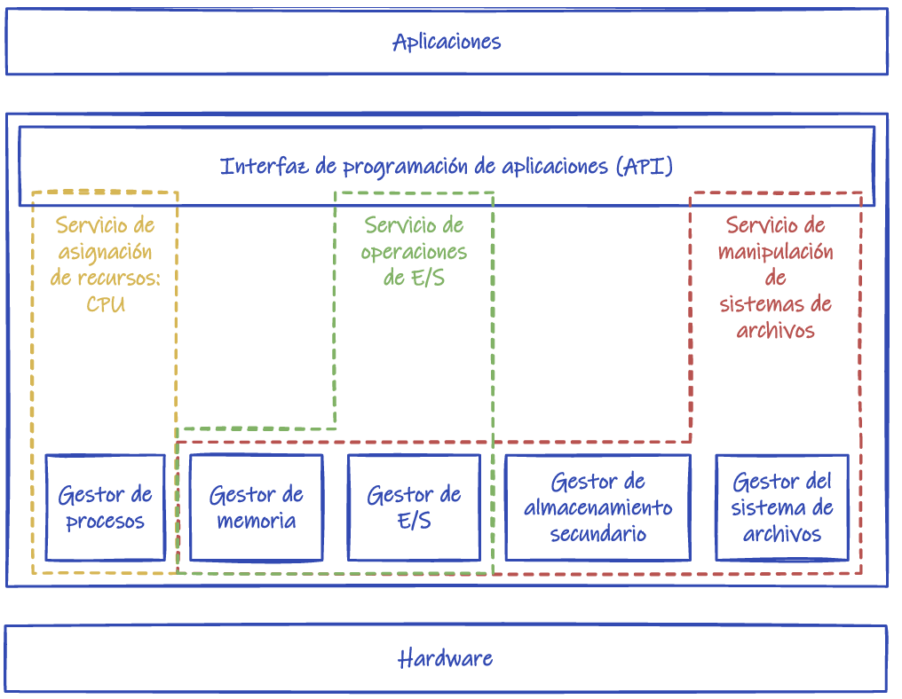
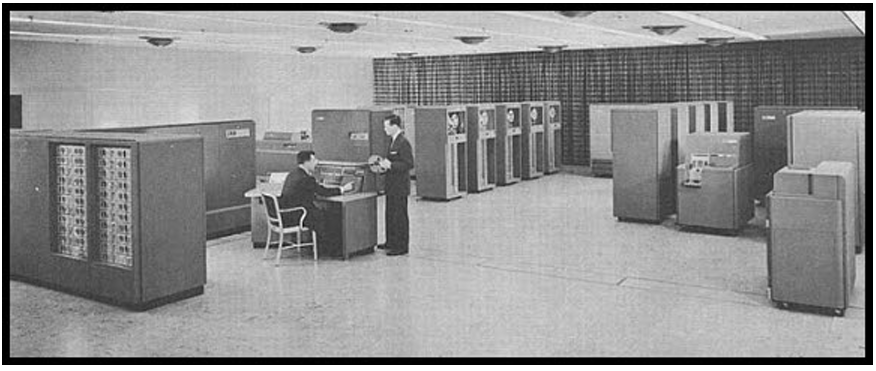
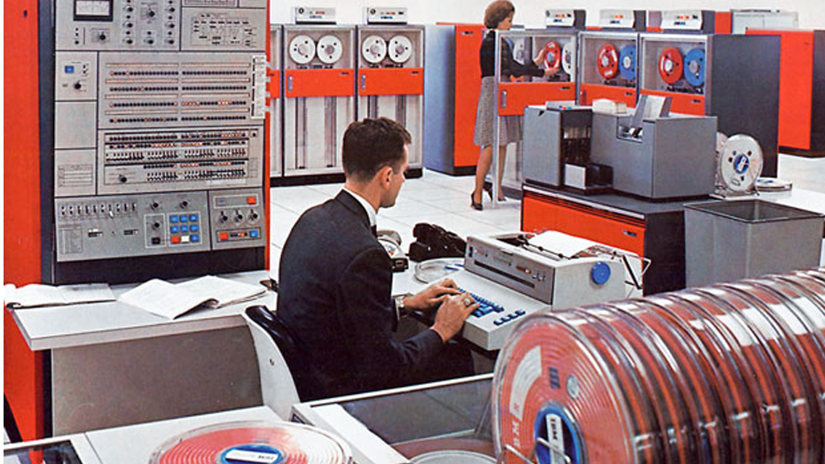
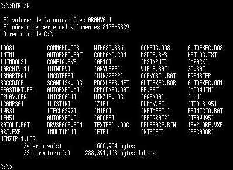
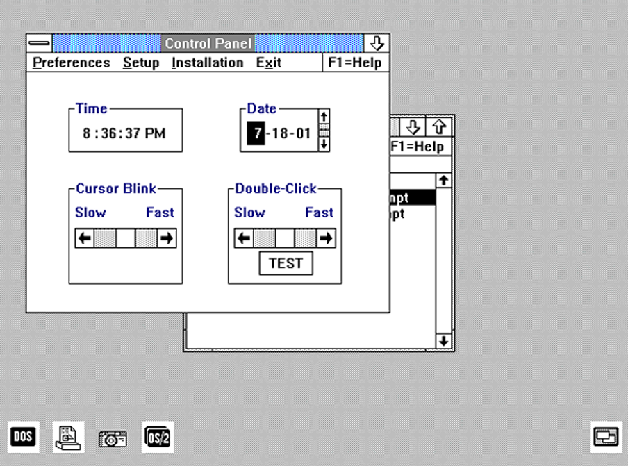
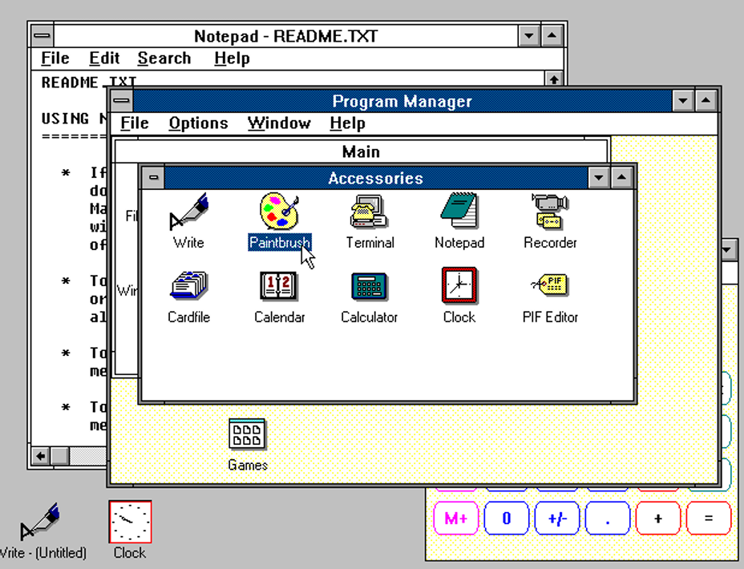
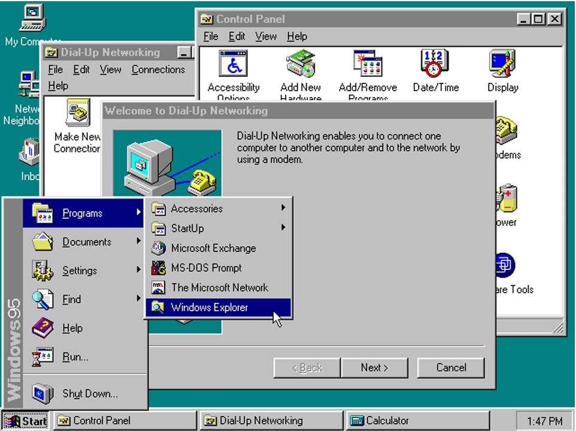

Sistema operativo¶
Sistema operativo¶
La residencia de mayores del pueblo va a impartir un curso de introducción a la informática para mayores y ha hecho un llamamiento a la población para que donen ordenadores que ya no utilicen para este fin.
En el Centro disponemos de algunos ordenadores antiguos que no utilizamos (Los que empleamos en la situación de aprendizaje del apartado anterior) y sería una buena idea donarlos para por una parte reutilizarlos en lugar de tirarlos al punto limpio y por otra parte darles un uso social.
Como son ordenadores antiguos, vamos a instalarles un sistema operativo ligero, pero a la vez actual. Además, sería interesante optar por un sistema operativo libre para no tener que gastar dinero en licencias.
Pero antes debemos conocer los distintos sistemas operativos que existen y sus características y vamos a realizar unas actividades para reforzar lo aprendido.Sistemas Operativos¶
El sistema operativo (SO) El sistema operativo es el software principal, básico y necesario para el funcionamiento del ordenador. Está formado por un conjunto de programas y funciones que gestionan el funcionamiento del hardware y sobre el que se apoya el resto del software, conformando un entorno integrado de trabajo para el usuario.
Entre sus funciones básicas, podemos destacar las siguientes:
- Proporciona una interfaz de comunicación entre el usuario y la máquina, empleando un lenguaje común (órdenes o comandos) o mediante elementos visuales intuitivos (ventanas, menús, cuadros de diálogo, etc.).
- Controla el funcionamiento de los distintos dispositivos del ordenador (memoria, disco duro, tarjetas de vídeo y de sonido, impresoras, etc.) y hace que el usuario pueda acceder a ellos para su uso y gestión. Es necesario que los distintos elementos del hardware sean reconocidos y configurados por el sistema operativo cuando se instalan.
- Administra la instalación y ejecución de las aplicaciones del usuario, dotándolas de los recursos de hardware necesarios y controlando los posibles errores de configuración que puedan generar.
- Controla el proceso de almacenamiento de la información en las distintas unidades de disco, así como los movimientos de datos que se realicen entre los distintos componentes del ordenador.
El sistema operativo comienza a funcionar (carga del sistema) cuando finaliza el trabajo de la BIOS, esto es, al encenderse o reiniciarse la computadora.

Los sistemas operativos no solo gestionan ordenadores, sino que se encuentran en todos los dispositivos que utilicen microprocesadores para funcionar: teléfonos móviles, tabletas, libros electrónicos, navegadores, smart TV´s, etc. Estos dispositivos deben de disponer de un sistema operativo que permita al usuario navegar por menús y ejecutar las aplicaciones instaladas:
Existen multitud de sistemas operativos: Android, iOS, Symbian OS, Windows, Firefox OS, Ubuntu, MacOS, Red Hat, Ubuntu, Debian, GNU Linux, etc. pero la familia de sistemas operativos Windows es la más utilizada, pues ofrece distintas versiones según el destinatario: servidores, empresas, usuarios personales y dispositivos móviles

Tipos de sistemas operativos¶
Los sistemas operativos pueden clasificarse utilizando diversos criterios:
Existen sistemas monousuario, en los que sólo un usuario puede trabajar con el ordenador en un momento dado (a este grupo pertenecen las primeras versiones de muchos sistemas como son MS-DOS, DR-DOS e IBM-DOS) y sistemas multiusuario, que permiten la ejecución de procesos u órdenes de varios usuarios a la vez (actualmente casi la totalidad de los sistemas son de este tipo como Windows 11, Mac OS..).
Hay sistemas monotarea, que no pueden ejecutar más de un programa a la vez, y sistemas multitarea, que permiten la ejecución concurrente en la memoria del ordenador de varios programas (lo habitual hoy en día es que el sistema sea multitarea).
Hablamos de sistema operativo de red si se ha fabricado para un entorno empresarial o para un servidor de red, es decir, sólo un programa puede ocupar el tiempo de respuesta del microprocesador. Y es decir, para uno de los ordenadores principales de una empresa u organización (sistema servidor), y hablamos de sistema monopuesto si se trata de un sistema para ordenadores personales.
Distinguimos entre sistemas de software libre o libre distribución (son gratuitos) y sistemas propietarios (cuya licencia se debe pagar, incluida o no en el precio del equipo).
Tip
El sistema operativo libre más utilizado es Linux, que tiene varios sistemas operativos derivados como Android y tiene varias versiones como EducaAndOs, la versión más utilizada hoy día es Ubuntu.
El sistema operativo propietario más usado es Windows, que tiene varias versiones, la versión actual es Windows 11.
Principales funciones del sistema operativo¶
Podemos resumir las funciones del sistema operativo en las siguientes:
- Proporciona una interfaz de comunicación entre el usuario y la máquina, empleando un lenguaje común (órdenes o comandos) o mediante elementos visuales intuitivos (ventanas, menús, cuadros de diálogo, etc.).

- Controla el funcionamiento de los dispositivos (memoria, disco duro, impresoras, etc.) para que los usuarios puedan acceder a ellos y usarlos. Por ello, el sistema necesita configurar y reconocer cada uno de los dispositivos del hardware.

-
Administra la instalación y ejecución de las aplicaciones del usuario, dotándolas de los recursos de hardware necesarios y controlando los posibles fallos que puedan generar.
-
Gestiona el proceso de almacenamiento de la información en los distintos soportes o discos, así como los movimientos de datos que se realizan entre los distintos componentes del ordenador.

- Proporciona medidas de seguridad para que los distintos recursos utilizados por los usuarios y las aplicaciones sigan unos permisos y reglas que impidan un uso accidental o no autorizado.
En resumen, un sistema operativo proporciona un entorno para la ejecución de programas. Ese entorno debe proporcionar ciertos servicios a los programas y a los usuarios de esos programas. Estos servicios son proporcionados gracias al funcionamiento coordinado de los diferentes componentes del sistema.

Los sistemas operativos actuales incluyen numerosas herramientas en forma de programas accesorios: reproductores multimedia, servicios de actualización, complementos para compresión y grabación de archivos, etc.
Cada vez son más los usuarios que disponen de dos sistemas operativos en un mismo equipo. Para hacerlo se necesita particionar el disco duro y tener un programa de arranque que nos permita seleccionar el sistema operativo con el que queramos trabajar. También es posible disponer de un programa que actúe como máquina virtual (como Virtual Box), en el que se instale un nuevo sistema operativo.

Evolución de los sistemas operativos¶
Los sistemas operativos han estado siempre ligados a la arquitectura de los ordenadores. Al igual que hablamos de generaciones en la evolución de los ordenadores, también podemos distinguir cuatro generaciones en los sistemas operativos:
Primera generación (1945-1955).¶
En esta generación todavía no podemos hablar de sistemas operativos, puesto que la introducción de órdenes y datos a las máquinas se realizaba directamente, sin un software intermedio. Esto hacía que el tiempo de preparación para realizar una tarea fuera considerable.
Segunda generación (1955-1965).¶
Se caracteriza por el uso de sistemas de procesamiento por lotes, donde los trabajos se reunían por grupos (lotes). Cuando se ejecutaba alguna tarea, ésta tenía el control total de la máquina. Al terminar cada tarea, el control era devuelto al sistema operativo, el cual limpiaba, leía e iniciaba la siguiente tarea. También aparece el concepto de nombres de archivo del sistema para lograr independencia de información. El primer sistema operativo fue el fabricado por General Motors para la máquina IBM 701.

Tercera generación (1965-1980).¶
En los años sesenta se producen cambios notables en diversos campos de la informática, con la aparición del circuito integrado. Cabe destacar en esta época el sistema 360 de IBM, instalado en grandes máquinas llamadas mainframes. En esta generación se introducen los conceptos de multiprogramación, tiempo compartido y multiprocesador. En los años setenta se produce el boom de los minordenadores y la informática se acerca al nivel de usuario. En 1968 aparece el sistema UNIX, muy utilizado en entornos de gestión de redes y precursor de la red Internet. El campo empresarial sigue dominado por los sistemas de IBM, como MVS.

Cuarta generación (desde 1981).¶
Con la introducción de técnicas que permiten integrar los componentes electrónicos, reducir su tamaño y aumentar la capacidad de las memorias, los sistemas operativos se hacen más fáciles de usar y con mayores posibilidades. Surgen interfaces más sencillas de comunicación entre el usuario y la máquina, como MS-DOS, y sistemas gráficos como MacOS y Windows. De las distintas evoluciones del sistema UNIX surgen los sistemas para ordenadores personales denominados Linux. En la actualidad, la evolución del sistema operativo está orientada a la aparición de nuevas tecnologías y dispositivos, así como a la integración de sus funciones y entornos dentro de Internet.
- MS DOS Consola MS DOS

- OS/2 Panel de control de Microsoft-IBM OS/2 1.1

- Windows 3.x Administrador de programas de Microsoft Windows 3.0

- Windows 95 fEscritorio de Microsoft Windows 95

Referencias¶
Actividades¶
📝 AA3.3 Sistema operativo¶
(C.ESP2 / CE2.3 / IC1-3p)
- ¿Qué es un sistema operativo? Nombra algunos.
- ¿Cuáles son los sistemas operativos más utilizados?
- ¿Qué sistema operativo tienes en tu ordenador y en tu móvil?
- Nombra los distintos tipos de sistemas operativos que existen.
- ¿Cuáles son las principales funciones de un sistema operativo?
- Busca información sobre VirtualBox.
📝 AA3.4 Evolución de los sistemas operativos¶
(C.ESP2 / CE2.3 / IC1-3p)
- Explica brevemente cómo han evolucionado los sistemas operativos desde la primera hasta la cuarta generación. Indica al menos una característica principal o avance de cada etapa y un ejemplo representativo de sistema operativo o máquina de esa época.
- ¿Qué tecnología marcó el paso a la segunda generación de ordenadores? ¿Y la tercera generación?